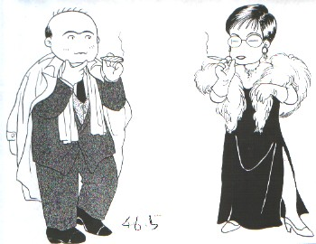
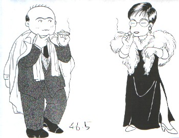
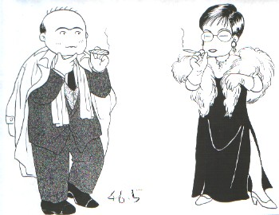

Monolog 独白 ・
（1３）なんとか回復  本調子にはほど遠いものの、なんとか回復。それにしても風邪で寝こんだのも久しぶりだった。 いままでも自分のペースでアクセスしてきただけで、別に無理をしてきたとは思っていない。しかしまぁ年も年、知らぬ間に体力が消耗するということもある。これからは意識的なペース配分を考えることも必要か。 また思いがけず全世界より無慮数万通（笑）におよぶお見舞いメールを頂き、恐縮しごく。この場を借りて、あらためて御礼申し上げます。 m(_ _)m
 本調子にはほど遠いものの、なんとか回復。それにしても風邪で寝こんだのも久しぶりだった。 いままでも自分のペースでアクセスしてきただけで、別に無理をしてきたとは思っていない。しかしまぁ年も年、知らぬ間に体力が消耗するということもある。これからは意識的なペース配分を考えることも必要か。 また思いがけず全世界より無慮数万通（笑）におよぶお見舞いメールを頂き、恐縮しごく。この場を借りて、あらためて御礼申し上げます。 m(_ _)m

以前へ 以降へ 目次へ